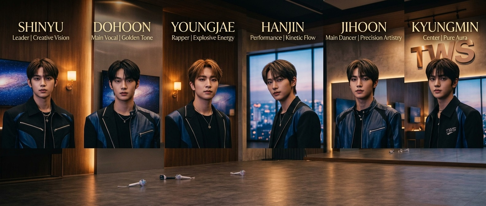
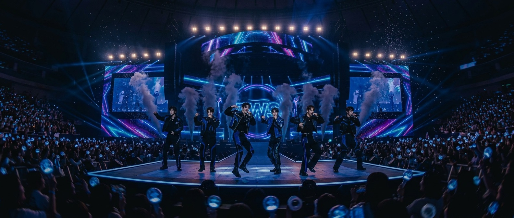

台北 TAIPEI
台北流行音樂中心
巡演資訊載入中
SCROLL TO DISCOVERA STORY IN SIX VOICES
我們從不同的地方出發，卻在同一段旋律裡相遇。
練習室的燈亮到深夜，舞台上的每一次呼吸都變成記憶。TWS 相信，音樂不只是一首歌，更是把彼此連在一起的那道光。這一次，讓我們把一路走來的心意，親自唱給你聽。
認識與我們同行的人THE PEOPLE BEHIND THE MUSIC
在聚光燈下相遇，
在音樂裡成為彼此。


TWSFIRST LISTEN · NEW SINGLE
巡演現場限定的新歌片段，現在先聽為快。按下播放，讓這段旋律陪你走一段路。
NEW SINGLELISTEN & WATCH · TWS